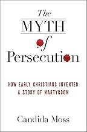
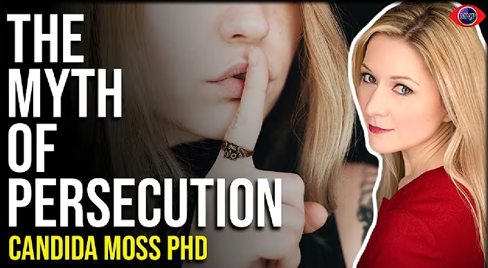

The Myth of Persecution:
How Early Christians Invented a Story of Martyrdom
How Early Christians Invented a Story of Martyrdom
Book

Videos
|
 2022 - 1:16:29 |
By Candida Moss
Candida Moss is the Cadbury Professor of Theology at the University of Birmingham, UK. A graduate of Oxford University,
she earned her doctorate from Yale University. Moss has received awards and fellowships...
A columnist for The Daily Beast, Moss has written for The Atlantic, LA Times, Washington Post, CNN,
and BBC, and is a frequent news commentator on CBS and CNN.
She has previously taught at the University of Notre Dame and the university of Chicago.
You will find below some book extracts.
"As we will see, the traditional history of Christian martyrdom is mistaken.
Christians were not constantly persecuted, hounded, or targeted by the Romans.
Very few Christians died, and when they did, they were often executed
for what we in the modern world would call political reasons."
p. 14
The evidence for Christian martyrdom is of three basic types:
evidence for persecution from Roman sources and archaeology, stories about martyrs,
and descriptions of Christian martyrdom in the writings of church historians.
On the Roman side, there is very little historical or archaeological evidence for the widespread persecution of Christians.
Where we do have evidence for persecution, in the middle of the third century,
it is not clear that the Romans were specifically targeting Christians at all.
Even the so-called Decian persecution in 250 CE was about political uniformity,
not religious persecution. Nothing in our evidence for Decius’s legislation mentions targeting Christians...
Then there are the stories about early Christian martyrs, commonly known as “martyr acts” or martyrdom stories.
Most of these stories have been handed down from generation to generation and accepted as authentic on the basis of tradition.
The vast majority of these stories, however, were written long after the events they purport to describe.
There are literally hundreds of stories describing the deaths of thousands of early Christian martyrs,
but almost every one of these stories is legendary...
In some of these cases, scholars are not sure that the people described in these stories even existed, much less that they were martyred.
In some of these cases, scholars are not sure that the people described in these stories even existed, much less that they were martyred.
p. 15
For the first two hundred and fifty years of the Christian era there are only six martyrdom accounts that can be treated as reliable.
These stories describe the deaths of Christianity’s oldest and most beloved saints: the elderly bishop Polycarp,
the young mothers Perpetua and Felicity, the teacher Ptolemy, the philosopher Justin Martyr, the martyrs of Scillium,
and the brave members of the churches of Lyons and Vienne in ancient Gaul, modern-day France,
who endured unspeakable tortures at the hands of the Romans.
When we look closely at even these stories, however, it becomes clear that they have been significantly edited and changed.
When we look closely at even these stories, however, it becomes clear that they have been significantly edited and changed.
p. 16
In fact, Christianity adopted the martyrdom idea from non-Christians.
Long before the birth of Jesus, the ancient Greeks told stories about the deaths of their fallen heroes and the noble deaths of the philosophers,
the Romans saw the self-sacrifice of generals as a good thing, and Jews in ancient Palestine accepted death before apostasy.
The idea of sacrificing oneself for one’s religious principles, country, or philosophical ideals was remarkably common.
An ancient Greek or Roman would have expected an honorable person to prefer death to dishonor, shame, or failure.
This kind of conduct wasn’t even seen as heroic; it was expected.
p. 17-18
1. Martyrdom Before Christianity
"IN COMPARISON TO TODAY, the ancient world was saturated with death...
One of the results of this dangerous death-filled world was that, unlike today,
death was not pushed to the margins of the ancient consciousness."
p. 29
"In many ways the death of Lucretia set in motion the events that led to the founding of the Roman Republic.
Her violation became a symbol for Tarquinian oppression, and her suicide the catalyst for rebellion. The
conceptual cornerstones of Rome were laid with Lucretia’s death."
p. 43
"if someone is willing to die for it, then it must be true. Many aspects of these stories
[the Heroes of the Trojan War, Funeral Orations speeches, Lucretia and the deaths of Philosophers like Socrates, Diogenes of Sinope, Zeno, Anaxarchus...]
seem just like Christian martyrdom.
The idea that death is a witness to truth, the belief that death for country, principle, or virtue is a good and honorable thing,
and the notion that by dying a person secures a permanent personal reward
(glory, fame, a better kind of immortality) are all elements of Christian martyrdom.
The fact that these heroes were held up as models for emulation and imitation means that they also serve the same function as Christian martyrs.
We are supposed to admire their courage, their virtue, and their deaths."
p. 43-44
"ALTHOUGH GREEKS AND ROMANS wrote extensively about the glory of dying for a cause,
they were not unique in this; the same principle can be found in the Hebrew scriptures and in ancient Jewish literature.
Although hints of the idea can be found earlier, the idealization of dying for God or the law really began to take shape in the second century BCE,
when the Jews lived under foreign rule.
In 167 BCE the Hellenistic monarch Antiochus IV, king of the Seleucid Empire,
put down a rebellion in Jerusalem and issued a decree outlawing many Jewish religious and ethnic practices...
His actions elicited a revolt and a succession of military uprisings, the details
of which are described in 1 and 2 Maccabees.
After considerable back and forth, this conflict eventually resulted in Jewish independence in 142 BCE.
It was out of this struggle to create and preserve Jewish identity that the first solid articulations
of the idea that Jews should die for God emerged.
A number of texts, both canonical and noncanonical, that came out of this context espouse the view that Jews should prefer the law to life."
p. 44-45
"Scholars hypothesize that this idea of delayed judgment and eschatological reward developed because
these promises of immediate reward were constantly unfulfilled.
As a result and in order to avoid the conclusion that God was either notoriously unreliable or fundamentally incompetent,
the idea of future eschatological reward and punishment emerged.
Injustices that were not righted in one’s lifetime
would be settled at the end of time. Within the context of persecution and martyrdom, this promise proved particularly potent.
It diffused larger questions about suffering and divine power.
That a righteous person died for God was no longer a potential threat to the omnipotence of God; it was a means of securing eternal reward."
p. 47
"In Daniel, persecution and martyrdom are linked to the idea of postmortem reward and justice."
p. 48
"Many of those who sleep in the dust of the earth shall awake, some to everlasting life,
and some to shame and everlasting contempt. Those who are wise will shine like the brightness of the sky,
and those who lead many to righteousness, like the stars forever and ever."
Daniel 12:2–3
"Therefore, by bravely giving up my life now, I will show myself worthy of my old age
and leave to the young a noble example of how to die a good death willingly and nobly for the revered and holy laws.”
2 Maccabees 6:28
"The Maccabean martyrs are presented as examples of courage and moral fortitude,
but they are—like the author of Daniel—absolutely confident that in the future they will be vindicated and rewarded for their behavior."
p. 51
"Death for Christ is just a variant in an ancient worldview that thought that dying for something greater than oneself was the best way to die...
Figures like the Maccabees, Achilles, Lucretia, and Socrates loomed large in the cultural imagination of the ancient world.
That Christians imitated Christ hardly made them unique in a world in which Jews imitated the Maccabees and Greeks imitated Socrates."
p. 54
2. Christian Borrowing of Jewish and Pagan Martyrdom Traditions
"Just as the Athenian informers convinced the people and then unjustly condemned Socrates,
so too our Savior and teacher was condemned by a few malefactors after being bound."
Acts of Apollonius 1.41
As modern readers, we might be overwhelmed with empathy for Jesus.
But if we were to imagine ourselves as ancient audience members, we can almost hear Achilles sneer.
p. 57
3. Inventing Martyrs in Early Christianity
"the earliest stories about the martyrs, borrowed ideas from their non-Christian contemporaries."
p. 92
"Once the pious chaff had been separated and the forged weeds cut,
out of the hundreds of martyrdom stories only six accounts remained from the earliest church.
These so-called authentic accounts are as follows:
- 1.Martyrdom of Polycarp
- 2.Acts of Ptolemy and Lucius
- 3.Acts of Justin and Companions
- 4.Martyrs of Lyons
- 5.Acts of the Scillitan Martyrs
- 6.Passion of Perpetua and Felicity
p. 92
"they [early martyrdom stories] are the bridge between the world of the New Testament and the history of the church.
They are used to demonstrate the fulfillment of Jesus’s prophecies about persecution and to form the
backbone of the argument that Christians have always been persecuted."
p. 92
"Martyrdom texts were used and continue to be used to inspire people.
The martyrs themselves are sources of consolation, inspiration, and spiritual guidance.
These stories are meaningful for what the martyrs said and did."
p. 93
4. How Persecuted Were the Early Christians?
"Why would this group of men have risked torture and death if Jesus were not really resurrected from the dead?
Surely their martyrdoms are proof of the veracity of Christianity and the truth of the events described in the New Testament."
p. 135
Rightly doubting the veracity of Tacitus.
p. 138
"All of this aside, there is very little evidence for the prosecution of Christians prior to 250."
p. 144
"The martyrdom myth maintains that Christians were constantly persecuted and died in huge numbers.
Yet here, in the only example from the first three centuries after Jesus’s death in which a large group of Christians could have been persecuted,
we find exactly the opposite situation. Instead of Romans persecuting Christians,
Christians are volunteering to die. And instead of Christians being interrogated, tortured, and executed, they are dismissed with hardly a second glance...
The important thing for us to note for now is that prior to 250 there was no legislation in place that required Christians to do anything that might lead them to die.
Even the correspondence between Pliny and Trajan provided guidelines only
for Pliny, not for the entire empire.
We have no reports of soldiers rounding up Christians, and the evidence that we do have suggests that Romans
were strongly opposed to this kind of specific targeting. The climate was hostile, but there was no active persecution."
p.145
"The fact that there were Christians in positions of authority so quickly after Decius’s supposed “persecution”
suggests that the effects of the decree were not widely felt...
That both Valerian and, as we will see, Diocletian ejected Christians
from public office demonstrates that Christians not only lived peacefully among the Romans,
they flourished and rose to positions of prominence and power."
p. 151-152
"Similarly, in the United States, provisions in the state constitutions of Arkansas, Maryland, Mississippi, North Carolina,
South Carolina, Tennessee, and Texas make it impossible for atheists to hold public office.
This legislation is discriminatory and outdated, but it expresses the same concern about the suitability of political leaders.
In the same way, Valerian’s suppression of Christianity was not about persecuting Christians in general;
it was about preserving the integrity of the Roman government and limiting the influence of what was seen as a potentially destructive group."
p. 152-153
"Only a handful of Christians seem to have died as a result of Valerian’s second letter in 258.
Although there are some highly literary martyrdom accounts describing the deaths of individual bishops
and church leaders from the period 257–59, the content of many of these stories,
some of which imitate the style and form of earlier martyrdom accounts, is of dubious origin."
p. 153
"For Christians, the period following Valerian’s capture was one of prosperity.
After Valerian’s death his son Gallienus revoked his legislation,
and Christians enjoyed more than forty years of undisrupted peace."
p. 153
"But with the accession of the emperor Diocletian, we find something quite different.
His legislation inaugurates the first and only period of persecution that fits with popularly held notions about persecution in the early church."
p. 154
"Persecution appears to have died out in the West during the year 304 and was
officially ended by the emperor Constantius in July 306.
Constantius went further, though: he not only granted Christians in Britain,
Gaul, and Spain freedom; he even restored their confiscated property to them."
p. 156-157
"THAT IN THE FIRST three centuries of the Christian era Christians were prosecuted at imperial request
for no more than twelve years hardly constitutes sustained and continual persecution.
There is scant evidence for Christians actually being targeted or actively sought out by the authorities.
The shrill complaints of early Christians who say that the Romans were constantly out to get them were overblown.
What do we make of this? What was the reality?
Scholarly treatments of this issue, especially by classicists, have sided with the Romans.
The continual refrain is that persecution was “sporadic and local,” meaning that,
apart from the Decian decree and the persecutions of Valerian and Diocletian,
Christians were not prosecuted by the imperial government."
p. 159
5. Why Did the Romans Dislike Christians?
"The Christians, as is by now clear, would not participate in the imperial cult,
and to the Romans, this state of affairs was dangerous. From an ancient perspective,
the presence of a religiously noncompliant group in any community was a threat to that community.
Human flourishing was a delicate affair, and religion was one way in which health,
political success, independence, good harvest, fine weather, and all aspects of everyday life were managed.
The Christians threatened all of this. They threatened to disrupt the pax deorum (“peace of the gods”) and,
in doing so, invited destruction on everyone. For the Romans, Christians’ nonparticipation in the imperial cult was threatening.
Their stubbornness was not just disrespectful and iconoclastic; it could potentially bring down the empire."
p. 175-176
"This same explanation can account for the accusations of incest.
The language of brotherly or sisterly love (philos) used by Paul in the New Testament
to describe the ways that Christians related to one another was banal enough, even in the ancient world.
But put this together with Christian insistence on referring to one another as “brother” and “sister”
and references to the opaquely named “love feasts,” or agape meals, in other Christian sources, and there’s some room for interpretation."
p. 183-184
"THE SUNDAY SCHOOL NARRATIVE of a church of martyrs, of Christians huddled in catacombs out of fear,
meeting in secret to avoid arrest, and mercilessly thrown to lions merely for their religious beliefs is a macabre fairy tale.
When Christians appeared in Roman courtrooms, they were not tried as heretics, blasphemers, or even fools.
Christians had a reputation for being socially reclusive, refusing to join the military, and refusing to swear oaths.
Once in the courtroom Christians said things that sounded like sedition. They were rude, subversive, and disrespectful.
Most important, they were threatening. Even if the actions of the Romans still seem unjust,
we must admit that they had reasons for treating Christians the way they did.
The fact that religion and politics were so intimately blended with one another means that it is difficult to parse the motivations
of Roman administrators as either religious or political. But from the Roman perspective and
from the perspective of members of most ancient religious groups and political organizations, the Romans had the moral high ground.
They were protecting the empire from the wrath of the gods and its effects. That Christians were executed should not surprise us;
this is a world in which people paid the “ultimate price” for seemingly small offenses.
As we have seen in the past two chapters, a close look at the evidence shows that Christians were never the victims of sustained, targeted persecution.
Even the so-called great persecutions under the emperors Decius and Diocletian
have been vastly exaggerated in our Christian sources.
In general, when Christians were executed, it was for activities that were authentically politically and socially subversive.
In the case of the emperor Decius, it seems that the so-called persecution of Christians wasn’t aimed at Christians at all.
It was a way of bringing about social and political unity in the empire, something much more like a pledge of allegiance than religious persecution.
When we put this together with the actual evidence for the persecution of Christians we saw in the previous chapter,
we can see that things were much less serious than the shrill rhetoric of early Christians suggests.
The Romans rarely persecuted Christians, and when they did, they had logical reasons that made sense to any ancient Roman.
This was not blind hatred or mindless persecution. Christians posed a threat to the security of the empire.
In a world in which treason and sedition were capital offenses, it makes sense that the Romans executed Christians.
This does not mean that—to us—the actions of the Romans are defensible, ethical, or just, but it does make them intelligible.
It also means that, with the exception of the climax of the Great Persecution (303–5),
there is nothing about the Roman treatment of early Christians that fits with the commonly held myth of Christian martyrdom."
p. 186-188
6. Myths About Martyrs
"The route is plagued by bands of terrorists who prey upon wealthy merchants and foreigners.
The vigilantes attack the convoys, destroying private property and gruesomely executing those who transport it.
The terrorists are the very same group responsible for suicidal attacks on established churches in neighboring
cities and numerous other acts of violence and brutality. Although their numbers are small and their means limited,
the sickening violence of their actions makes them notorious throughout the civilized world,
in which they are vilified and feared. Their ultimate aim is a martyr’s death, a death that they believe will bring them honor, glory, and heavenly rewards.
The people in question are not modern-day terrorists, but a group of ancient Christians known as the Circumcellions."
p. 189
"...one of the most common misconceptions about early Christian martyrs:
the idea that they were humble pacifists who meekly accepted torture because of their love of Jesus.
This description of Christian martyrs is often compared—whether explicitly or implicitly—with that of martyrs from other religions.
In recent years the focus of this discussion has been on Muslim martyrs,
but in the past Christian martyrs have been contrasted with representatives from other major religions
and even from various individual Christian denominations. The point of these comparisons is that Christian martyrs are good; they are true martyrs.
But when we look at the evidence, we see that even if we would call them good, Christian martyrs are a lot more complicated—for good
and for bad—than their reputation would lead us to believe."
p. 190-191
"What all of this goes to show is that when Christians died, it was not always as the result of persecution or even prosecution."
p. 196
7. The Invention of the Persecuted Church
"Eusebius, like all historians, had an agenda and purpose in writing.
His portrayal of Christianity as a church of martyrs was strategic.
It allowed him to use martyrs to further other claims he wanted to make...
p. 216
"the development of a history of martyrdom was a deliberate and strategic attempt to improve the image of Christians,
to bolster the position of the church hierarchy, and to provide security for orthodoxy.
Eusebius uses the history of the martyrs as a means of drawing battle lines for the established church orthodoxy against heresy.
p. 217